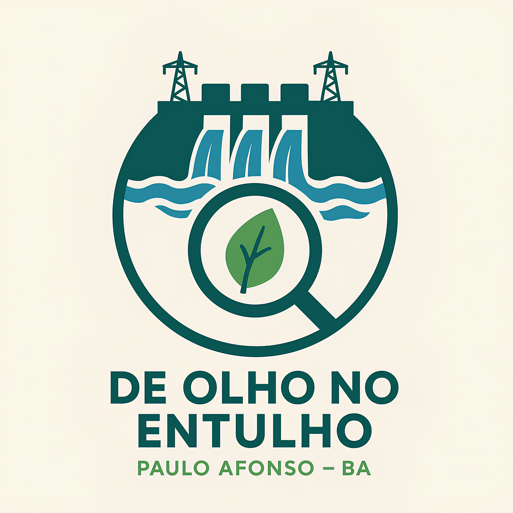

O que é o projeto?.
Temos visto recentemente que nossa bela cidade tem sido invadida por locais com acúmulo irregular de lixo. Pessoas, sem consciência ambiental, estão descartando entulhos, móveis, plantas e os mais diversos itens de forma irregular em canteiros e calçadas. Assim, nesta página, você pode ajudar a Secretaria de Meio Ambiente a encontrar estes locais, e até mesmo, apresentar informações anonimamente sobre possíveis descartes irregulares.
Colabore com o projeto© 